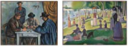
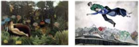

- 본 결과는 검사를 실시하는 시점에서의 경향성을 분석한 것으로, 평생 지속되는 것으로 단정할 수 없으며 성장 과정에서 변화할 수 있습니다.
- 유사한 성향을 가진 사람들 가운데에도 많은 개별적 차이가 존재합니다.
- 본 결과는 미술 능력에 대한 평가가 아닌 독특한 성향을 분석한 것으로 향후 창작과 미술 학습을 위한 자료로 활용될 수 있습니다.
- 어떤 성향인지를 파악하는 것 못지않게 이를 어떻게 개발할 것인지가 중요합니다. 따라서 발달 단계에 따른 적절한 자극과 교육적 경험이 중요합니다.
iBoda 미술성향검사(AAT) 결과 종합
i보다 미술성향검사에 대한 ooo님의 종합결과 입니다.
미적감수성 영역
ooo님의 미적성향은 [ERNC]입니다.
ooo님의 미적선호는 [G-3D]입니다.
000님은 작품의 주제를 탐색할 때 외부 세계에 관심이 있으며, 이를 재현적인 방식으로 나타내는 것을 선호합니다. 작품을 창작할 때 자연주의적 표현 양식을 선호하며, 작품을 통해 관람자와 인지적 교감을 갖고자 합니다.
000님은 기하학적 형태를 입체적 공간에서 탐구하는 것을 선호합니다. 당신의 선호색인 파랑은 조화로운, 열정적인, 행복한 느낌과 연관됩니다. 또한 어두움, 차가움, 냉철한 이미지를 전달하는 한색을 선호하며 부드럽고 정적인 변화를 나타내는 유사대비를 선호합니다. 000님이 선호하는 이러한 선, 형, 공간, 색채의 다양한 시각적 효과를 탐구하여 자신만의 독창적인 조형 양식을 발전시켜봅시다.
iBoda 미술성향검사(AAT) 결과 종합
시각 인지 영역
ooo님의 강점은 [시각적 문해력] 입니다.
시각적 문해력
공간 지각 능력000님은 이미지를 말로 표현하거나 시각 정보를 읽어내는 시각적 문해력이 우수한 것으로 보입니다. 또한 시각 이미지의 지각 능력은 보통의 수준을 나타냅니다. 시각 이미지를 머릿속에서 재생, 조작, 변형하는 공간지각능력은 부족한 것으로 보입니다. 주변의 시각 이미지를 주의 깊게 관찰하고 분석하는 습관을 가져봅시다. 일상 생활 속에서 ‘보는 감각’을 적극적으로 활용하고 많은 흥미로운 것을 발견함으로써 창작활동에 영감을 얻을 수 있습니다.
정서 행동 영역
ooo님의 강점은 [호기심] 입니다.
호기심
자기결정성창작자에 필요한 정서행동적 특성 중 000님은 호기심이 높으며, 과제집착력이 높은 성향을 가지고 있습니다. 앞으로 미술의 창작과 감상 과정에서 자기결정력과 자신감을 가질 수 있도록 관심을 가져보세요. 자신의 강점을 활용하고 부족한 특성을 보완한다면 000님의 미술 세계가 더욱 넓어질 것입니다.
1. 미적 감수성 영역 ( Aesthetic Sensibility )
1.1 미적 판단 분석
미적판단이란? 사람은 사물을 시각적으로 대면할 때, 쾌와 불쾌에 대한 주관적 판정 내립니다. 아래 결과는 자신을 유쾌하게 하게 하는 시각적 대상을 가려내는 기준 또는 근거이며, 이는 대상에 대한 이해나 가치의 판단과는 무관합니다.
ooo님은 내면세계, 재현적, 자연주의적, 정서적 영역 이 두드러지게 나타났습니다.
내면 세계(Introspective)란, 독창적, 상징적 표현을 통해 감정과 감동을 전달하고 주제에 관한 주관적인 느낌과 생각을 표현하는 것을 선호하는 성향입니다.
재현적 성향(Representational)이란, 외양에서 보이는 특징을 있는 그대로 재현하여 관람자에게 대상이 구상적으로 지각되거나 경험되도록 하는 표상 형식을 선호하는 성향입니다.
장식적 성향(Decorative)이란, 조형 요소와 원리를 활용하여 화면을 장식적으로 구성하고 대상의 조형적인 특성을 살려 형상화하는 방식에 관심을 두는 성향입니다.
정서적(Sensitive)이란, 비합리적이거나 자유롭고 즉흥적인 표현 방식을 즐기고 정서적인 교감이 가능한 작품의 창작을 선호하는 성향입니다.
1. 미적 감수성 영역 ( Aesthetic Sensibility )
000님의 미적 성향과 관련된 미술작품을 감상해 보세요.
외부 세계
Extrovert

내면 세계
Introspective
외부 세계
Extrovert 내면 세계
Introspective 외부 세계
Extrovert내면 세계
Introspective외부 세계
Extrovert내면 세계
Introspective1. 미적 감수성 영역 ( Aesthetic Sensibility )
1.2 미적 선호 분석
미적선호란? 미적 판단이 개별 대상에 대한 쾌와 불쾌의 주관적 판정이라면, 미적선호는 여러 미적 대상을 분류하고 선택하는 행위와 연관됩니다. 심미안이 고도화 될수록 분류가 세밀해지고, 선택의 우선순위에 개인 간의 차이가 생기게 됩니다.
ooo님은 기하학적, 평면적 성향이 두드러지게 나타났습니다.
기하학적 성향(Geometric)이란, 수학적 원리와 구조를 통해 주변 세계에 질서를 부여하는 것을 강조하며, 규칙적이고 단순 명료한 형태를 선호하는 성향입니다.
평면적 성향(2-Dimensional)이란, 사물이나 인물 외면의 형태나 성질을 참조로 하여 대상의 구체적인 특징이 그대로 지각되거나 경험될 수 있도록 표현양식을 선호하는 성향입니다.
외부 세계
Extrovert내면 세계
Introspective외부 세계
Extrovert내면 세계
Introspective1. 미적 감수성 영역 ( Aesthetic Sensibility )
1.3 색채 성향 분석
000님의 색채 성향을 분석한 결과입니다.
ooo님은 한색과 유사대비를 선호하는 것으로 나타났습니다.
다양한 색채는 각기 다른 파장과 에너지를 가지고 있습니다. 따라서 사람들의 생각과 행동에 영향을 미치기도 하고, 반대로 개개인의 성격을 나타내는 하나의 기호가 되기도 합니다. 여기에서 중요한 것은 특정한 색이 긍정적 혹은 부정적 성향을 나타내는 것이 아니라는 점입니다. 일반적인 색의 선호에 따른 상반된 특성을 통해 자신을 보다 객관적으로 바라볼 수 있습니다. 000 님이 선택한 색상의 특징을 다음과 같습니다.
조화로운, 열정적인, 행복한
지나치게 야심찬, 냉소적인
상황을 정확하게 파악하여 아이디어를 실현하는 방법을 알고 있으며, 예술과 아름다움을 좋아하는 예술 수집가의 기질을 가짐
지적이고 질문을 많이 하며, 독창적인 문제해결을 즐김
두 가지 이상의 색을 어울리게 배치하는 것을 배색이라고 합니다. 색을 어떻게 조합하는지에 따라 이미지의 전체적인 톤과 느낌이 달라집니다. 따라서 선호하는 배색의 종류에 따라 시각적으로 어떤 느낌에서 즐거움을 느끼는지, 혹은 어떤 느낌으로 표현하는 것을 좋아하는지 알 수 있습니다. 당신이 선택한 배색에 대한 선호 분석입니다.
000님은 한색을 선호하는 것으로 보입니다.
한색은 파랑, 남색, 보라 등의 차가운 느낌을 주는 계열의 색을 의미합니다. 한색은 어두움, 차가움, 냉철한 이미지를 전달합니다.
000님은 유사대비을 선호하는 것으로 보입니다.
유사대비는 인접한 거리에 있는 색의 대비입니다. 000 님은 부드럽고 정적인 변화를 선호하는 것으로 보입니다.
2. 시각 인지 영역 (Visual Cognition)
000님의 시지각 영역을 분석한 결과입니다.
ooo님의 강점은 시각적 문해력입니다.
시각적 문해력이란?
글(text)을 읽고 해석하는 것, 즉 글에서 맥락과 의미를 찾아내는 것을 ‘문해’ 라고 합니다. 일상의 다양한 시각적 이미지에도 이런 맥락과 의미가 숨어있다면, 그 안에도 글(text)이 담겨 있다고 할 수 있습니다. 이미지 안에 숨어있는 맥락과 의미를 찾아내고 나아가 표현하는 능력을 ‘시각적 문해력’이라고 합니다.
시지각 능력이란?
시각을 통해 들어온 정보는 뇌를 통해 재해석 됩니다. 대상의 같음과 차이를 구별하는 ‘변별능력’, 완전하지 못한 시각 정보를 연결하고 완성시키는 ‘종결능력’, 시각적 정보를 명확하게 다시 재생하는 ‘시각기억능력’ 등이 시지각능력에 포함됩니다.
공간지각 능력이란?
시각으로 포착한 공간의 거리감을 감지하고 반응하는 능력을 말합니다. 비단, 현실의 공간이 아니더라도 눈에 보이지 않는 것을 추상적으로 추론해 이를 머리 속에서 공간을 패턴화 하거나 형상화해내는 능력이 포함됩니다.
iBoda 미술성향검사(AAT) 결과 종합
000님의 시지각 영역을 분석한 결과입니다.
ooo님의 강점은 시각적 문해력입니다.
시각적 문해력
| 점수 | 해석 |
|---|---|
| * | 미술 비평은 작품의 특징을 자세히 관찰하는 것으로 시작합니다. 이러한 관찰 능력은 미술 작품의 특징을 찾아 구체적인 용어로 서술할 수 있는지를 통해 알 수 있습니다. 테스트계정 님은 미술 작품의 첫 인상과 전체적인 표현 특징을 묘사하는 용어를 %적절하게 선택하였습니다. |
| 부족 | 많은 정보가 이미지로 전달되는 현대 사회에는 글을 보고 머릿속에 그려내는 능력이나 그림을 말과 글로 설명할 수 있는 능력이 중요합니다. 테스트계정 님은 글과 이미지를 연결하는 시각적 정보 이해 능력이 부족한 것으로 보입니다. |
시지각 능력
| 점수 | 해석 |
|---|---|
| 우수 | 시각 이미지를 파악하는 것은 구성요소의 특징을 관찰하여 형태 간의 관계를 발견하고 이해하는 것입니다. 형태의 유사점과 차이점을 비교하거나, 전체 그림 안에서 부분을 찾아 연결할 수 있는 능력은 시각 이미지에 대한 지각 능력을 나타냅니다. 테스트계정 님은 시각 이미지 지각 능력이 우수한 것으로 보입니다. |
공간지각 능력
| 점수 | 해석 |
|---|---|
| 보통 | 공간지각 능력은 2차원적, 3차원적 공간 안에서 이미지의 구성요소를 분석, 비교하여 형태, 위치, 거리 등을 파악하는 능력입니다. 이를 통해 머릿속에서 이미지를 재생하고 조작하거나 3차원적으로 이미지를 변환할 수 있습니다. 테스트계정 님은 대상에 대한 공간지각 능력이 보통의 수준을 나타냅니다. |
3. 정서행동 영역 (Emotional Behavior)
3. 정서행동 영역 (Emotional Behavior)
000님의 정서행동 영역을 분석한 결과입니다.
ooo님의 강점은 호기심입니다.
| 척도 | 백분위 | 수준 | 해석 |
|---|---|---|---|
| 호기심 | 40.00 | 보통 | 호기심은 주변에 대해 많은 관심을 갖고 있으면서 항상 모르는 것을 더 배우고 싶어 하는 마음입니다. 예술가는 호기심을 통해 일상적인 대상을 자신만의 방식으로 관찰하고 새로운 특성과 의미를 발견하게 됩니다. 호기심은 감각과 지각을 각성의 상태로 일깨운다는 점에서 독창적인 창작 활동의 출발점이 됩니다. |
| 개방성 | 55.00 | 보통 | 개방성은 답이 정해져 있지 않은 모호함에 대해 인내하고, 복잡한 것을 즐기고 탐구하는 태도입니다. 창작 활동은 미리 정해놓은 절차를 기계적으로 수행하여 결과에 도달하는 것이 아니라, 계속해서 방향을 찾아가면서 창의적으로 문제를 해결하는 과정입니다. 예술가에게 개방적인 태도는 융통성과 즉흥성을 발휘할 수 있는 자질이 됩니다. |
| 자기 결정성 |
85.00 | 높음 | 자기결정성은 자신을 자기 행동의 주인공이자 조절자로 여기는 신념과 태도를 의미합니다. 자율성을 가진 예술가는 스스로 목표를 세우고, 작품에서 무엇이 중요한지 선택하며, 자신이 가치 있다고 생각하는 것을 수행할 때 충족감을 느끼게 됩니다. 자기결정성은 자신의 느낌과 생각을 자신만의 방식으로 표현하는 미술 활동에서 핵심적인 요소가 됩니다. |
3. 정서행동 영역 (Emotional Behavior)
3. 정서행동 영역 (Emotional Behavior)
000님의 정서행동 영역을 분석한 결과입니다.
ooo님의 강점은 과제집착력입니다.
| 척도 | 백분위 | 수준 | 해석 |
|---|---|---|---|
| 과제 집착력 |
50.00 | 보통 | 과제집착력은 영재성의 요소 가운데 하나로 어떤 과제를 집중하여 끈질기게 해나가는 에너지를 의미합니다. 과제집착력을 통해 자신의 창작 활동에 몰입할 수 있으며, 그 과정에서 자기훈련을 통해 선호하는 미술 매체를 숙련된 방식으로 활용할 수 있게 됩니다. 이러한 태도는 자신의 잠재력을 특별한 미술적 능력으로 변화시키는 데 중요한 역할을 합니다. |
| 도전성 | 55.00 | 보통 | 도전성은 모험을 즐기고 위험을 감수하면서, 실패했을 때에도 포기하지 않고 이를 받아들이고 이로부터 배우고자 하는 자세를 의미합니다. 창의적인 학습자는 도전적인 과제를 수행할 때 내부로 관심을 돌리고 자신의 목표를 세워 민감하게 반응합니다. 또한 만족할 수 있는 성취에 이를 때까지 실수를 하더라고 계속해서 시도하면서 성장해 나갑니다. |
| 자신감 | 45.00 | 보통 | 자신감은 자신이 유능하다고 느끼는 자아개념으로, 사회 환경과의 상호작용 속에서 자신의 능력을 사용할 기회를 통해서 충족됩니다. 창작과 감상활동은 타인의 공감을 통해서 그 의미가 확장됩니다. 자신감이 있는 학습자는 자신의 작품에 대한 타인의 비평과 피드백을 비판적으로 수용하며 이를 통해 다음의 창작 활동을 계획합니다. |
보다쌤의 성향분석
보다쌤의 성향분석
나는 세상을 있는 그대로 그려내는 전략가!!
외부(E)와 내면(I)
표현주제미술활동에서 ‘표현주제’를 선택하는 개인의 성향을 나타냅니다. 세상을 나와 내가 아닌 것으로 구분할 수 있다면, 그림의 주제 역시 나와 내가 아닌 것으로 구분할 수 있을 것입니다. 작품을 통해 주관적인 나의 이야기로 소통하고 싶다면 내면성향, 내가 아닌 보다 객관적인 이야기로 소통하고 싶다면 외부성향에 가깝습니다.
‘외부’ 성향은 사회적, 역사적 이야기 등 내가 아닌 바깥 세계에 대한 내용을 그림의 주제로 선택하여 표현하려는 성향입니다. 말과 글이 아닌 시각적 요소를 활용하여 의미를 전달하는 체계(system)를 ‘시각 언어’라고 부르는데, ‘외부’ 성향을 가진 창작자는 미술활동 안에서 시각언어를 활용해 내용을 객관적으로 전달하고 소통하는데 관심을 보입니다.
재현(R)과 추상(A)
구성방식개별적인 것과 보편적인 것이 있습니다. 예를 들어, 현정, 은주, 민재, 서영, 승민은 모두 ‘개별’ 사람이면서 동시에 인간이라는 ‘보편’ 개념 안에 속해 있습니다. 그리고 우리는 개별 사람은 본 적이 있지만, 인간 자체는 본 적이 없습니다. 개별자는 관찰이 가능하지만, 보편자는 관찰이 불가능한 것입니다. 때문에 눈에 보이는 ‘개별’적인 것은 무언가를 관찰해서 따라 그리는 ‘재현’을 통해 표현이 가능하며, ‘보편’은 보이지 않는 무언가를 표현하기 위해 ‘추상’의 방법을 사용합니다.
‘재현’은 대상의 형태와 특징을 있는 그대로 표현하려는 성향입니다. 관람자는 화가의 모사(모방하여 따라 그리는 것)를 통해 표현 대상을 구체적인 형태로 지각하고 경험합니다. 창작자는 표현할 대상을 경험하지 못했거나, 현재 관찰할 수 없다 하더라도 얼마든지 재현할 수 있습니다. 과거의 이야기이든 상상의 이야기이든 화가는 관람자의 눈 앞에 현재(present)하는 것처럼 사실적으로 그려낼 수 있기 때문입니다. 사진이 존재하지 않았던 시기에는 이러한 미술 작품이 사진의 역할을 대신 하였습니다. 현재하지 않는 것이 창작활동을 통해 ‘다시’ 현재할 수 있다(RE-present)면 그것을 재현이라고 말합니다.
보다쌤의 성향분석
자연(N)과 장식(D)
자연스러운 것과 장식적인 것은 상대적인 것이라 명확하게 구분하기는 어렵습니다. ‘비교적’ 자연스러운 것과 ‘비교적’ 장식적인 것이 있을 뿐입니다. 다만, 자연스럽다고 느끼는 그림들의 공통적인 특징을 발견할 수 있고, 장식적이라고 느끼는 그림들의 주된 특징을 발견할 수 있다면, 창작자는 그것을 통해 자신이 선호하는 표현양식을 선택할 수 있습니다.
주변 세계를 경험적 관찰을 통해 정확하게 표현하려는 성향입니다. 관찰과 정확한 표현, 사실적인 묘사라는 측면은 재현과 비슷한 부분분이지만, ‘자연스럽다’는 것은 경험된 것을 꾸미지 않고 ‘있는 그대로 그린다’는 느낌이 강합니다. 완전한 자연주의자라면 없는 것을 인위적으로 만들거나 수정, 보완하는 것을 비교적 선호하지 않을 것입니다. 있는 그대로의 아름다움을 발견하고 표현한다면 그것만으로도 좋은 작품이 되기 때문입니다.
인지(C)와 정서(S)
인지와 정서는 세상과 소통하는 두 개의 거울입니다. 인지는 머리의 거울, 정서는 마음의 거울입니다. 머리에 거울이 없다면 본 것을 떠올릴 수 없고, 마음에 거울이 없다면 본 것을 느낄 수 없습니다. 이 두 거울은 사람마다 생긴 것이 조금씩 다르며, 심지어 각자 다른 방식으로 활용합니다. 때문에 같은 미적대상을 대하더라도 모두가 똑같이 바라보지 않고, 모두가 똑같이 느끼지 않는 것입니다.
미술(美術)은 문자 그대로 해석하면 ‘아름다움을 표현하는 기술’입니다. 그러나 종종 우리는 작품 안에서 화가의 화려한 기술이 아닌, 숨겨진 의미나 내용을 발견하는 경우가 있습니다. 창작자가 의도하여 관람자에게 사고작용를 불러 일으킬 수도 있고, 창작자의 의도는 아니지만 관람자의 감상과정에서 의미나 사고작용이 생겨날 수 있습니다. 창작 또는 감상의 과정에서, 이렇듯 미술적 주제에 대해 사유하며 생각을 불러 일으키는 작품을 선호한다면 ‘인지’적 성향이라고 할 수 있습니다.
본 결과는 검사를 실시하는 시점의 경향성을 분석한 것으로, 평생 지속되는 것으로 단정할 수 없으며 학습과 훈련, 성장과정 안에서 변화할 수 있습니다. 미술학습분석(ALA)의 전문가 비평과 분석을 통해 개인의 미술 특성을 보다 자세히 파악할 수 있으며, ooo님에게 적합한 학습방향을 설계할 수 있습니다.
보다쌤의 성향분석
ooo님이 선택한 작품들을 다시 한 번 감상해 보세요!
아래는 ooo님이 선택한 작품들입니다. ooo님의 성향이 잘 반영되어 있나요? 오늘 저녁에 무엇을 먹을지 우리의 입맛에 정답이 없는 것처럼, 오늘 어떤 이미지를 선택할지에 대한 시각적 입맛에도 정답은 없습니다. 입맛이 변해가는 것처럼, 이미지를 선택하는 성향 역시도 앞으로 얼마든지 변할 수 있습니다. 저작권 문제로 검사지에 넣을 수 없었던 현대미술 작품들을 찾아서 함께 감상해보세요. 다양한 현대미술을 통해 여러분의 미적성향을 다시 한 번 확인해보는 것도 즐거운 경험이 될 것입니다.